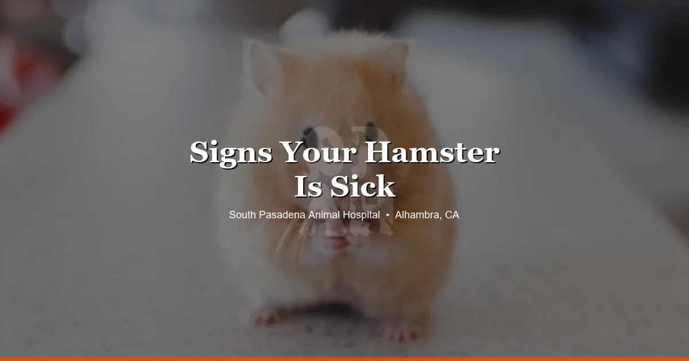

April 14, 2026 · 7 min read
Wet Tail in Hamsters: Symptoms, Treatment & When It’s an Emergency

If you've noticed your hamster's rear end is damp or soiled, or your hamster has gone from active to hunched and lethargic in less than a day, this is an emergency. Wet tail is one of the most serious — and most rapidly fatal — illnesses in pet hamsters, and it requires same-day veterinary care. This guide explains exactly what wet tail is, how to recognize it, and what happens when you bring your hamster to our Alhambra hamster vet clinic.
What Is Wet Tail?
Wet tail is the common name for a condition technically called proliferative ileitis — a severe bacterial infection of the small intestine caused primarily by Lawsonia intracellularis. The infection triggers intense, watery diarrhea that soaks the fur around the tail and hind end, giving the illness its name. The diarrhea leads rapidly to dehydration and systemic collapse.
Wet tail is most common in Syrian (golden) hamsters, particularly young hamsters between 3 and 8 weeks old, though it can affect hamsters of any age or breed. The condition is strongly associated with stress — including being weaned, transported, introduced to a new home, or housed in poor conditions. This is why newly purchased hamsters from pet stores are at elevated risk during their first week with you.
Dwarf hamsters (Roborovski, Campbell's, Winter White, Chinese) are somewhat less susceptible to classical wet tail, but they can still develop severe diarrhea from other bacterial causes that are equally dangerous and equally urgent.
Wet Tail Symptoms: What to Look For
The symptoms of wet tail can progress from early to critical within 24 hours. Know what to look for so you can act fast:
- Wet, matted fur around the tail and hindquarters — the defining sign; the area looks damp or soiled with diarrhea
- Strong, unpleasant odor — distinct from normal hamster smell; often described as foul or rotten
- Lethargy and weakness — your hamster stops moving around, stays in one corner, doesn't respond normally to handling
- Hunched posture — the hamster looks "balled up" or tense, a sign of abdominal discomfort
- Refusal to eat or drink — a hamster that has stopped eating is always a concern; combined with the above signs, it's critical
- Ruffled or unkempt coat — hamsters that feel unwell stop grooming
- Prolapsed rectum — in severe cases, tissue may protrude from the anal area; this requires emergency care immediately
If you see two or more of these signs together, do not wait to see if your hamster improves. Call our clinic at (626) 441-1314 or come in right away.
How Is Wet Tail Diagnosed?
At South Pasadena Animal Hospital, a wet tail diagnosis is largely clinical — meaning your vet will assess your hamster's symptoms, physical condition, and history. The wet hindquarters, characteristic odor, and signs of dehydration are usually enough to confirm the diagnosis and begin treatment without delay.
Your vet will assess the degree of dehydration by checking skin turgor (how quickly skin springs back when gently pinched), mucous membrane color, and the hamster's overall responsiveness. In severe cases, the hamster may be too weak to stand. In less advanced cases, the physical exam combined with history gives the vet what they need to start treatment immediately.
Additional diagnostics like fecal cultures can confirm the specific bacteria involved, but treatment typically begins before those results are available because time is the critical factor.
Wet Tail Treatment
Treatment for wet tail focuses on three things: fighting the infection, correcting dehydration, and supporting the gut. Your vet will typically recommend:
- Antibiotics — prescription antibiotics are required to address the bacterial infection. Over-the-counter "wet tail drops" available at pet stores are not a substitute and can delay life-saving treatment.
- Fluid support — dehydration is a major cause of death in wet tail cases. Depending on severity, your hamster may receive subcutaneous fluids (injected under the skin) to restore hydration.
- Gut motility support — medications may be used to help restore normal intestinal function.
- Warmth and supportive care — a sick hamster cannot regulate its body temperature well. Keeping your hamster warm at home (using a warm water bottle wrapped in a towel, never a heating pad directly) is something your vet will advise on.
- Dietary guidance — soft, easily digestible foods and withholding fresh produce temporarily to reduce additional GI upset.
Even with prompt treatment, wet tail carries a guarded prognosis — meaning outcomes are uncertain. Hamsters that are treated within the first 12–24 hours of symptoms have a significantly better chance of survival than those who are treated later. This is why we cannot stress enough: if your hamster has wet tail symptoms, today is the day to come in.
Can Wet Tail Spread to Other Hamsters?
Yes. The bacteria associated with wet tail can be transmitted between hamsters through contaminated bedding, water, and feces. If you have multiple hamsters, isolate the sick one immediately — ideally in a separate cage in a separate room. After handling a sick hamster, wash your hands thoroughly before touching other animals.
Once your hamster has been treated, thoroughly clean and disinfect the cage, water bottle, food bowl, and all cage accessories before returning any hamster to the enclosure. Use a pet-safe disinfectant and let everything dry completely.
How to Reduce Wet Tail Risk
While wet tail can never be completely prevented, these practices significantly reduce the risk:
- Minimize stress when bringing a new hamster home. Set up the cage before the hamster arrives, place it in a quiet room, and give the hamster 2–3 days to settle before handling much.
- Quarantine new hamsters. Keep a new hamster separate from existing hamsters for at least 2 weeks.
- Keep the cage clean. Spot-clean daily; full cleans once or twice a week. Wet, soiled bedding encourages bacterial growth.
- Provide a consistent diet. Sudden diet changes can stress the GI tract. Transition to new foods slowly.
- Avoid overhandling newly acquired hamsters. Young hamsters are especially vulnerable in the first week after purchase. Let them eat, explore, and adjust before handling increases.
- Schedule a wellness exam. Bringing your hamster in for a health check within the first week of ownership lets your vet assess their baseline health and catch any early concerns.
When Wet Tail Isn't Wet Tail
Not every hamster with diarrhea has wet tail. Other causes of diarrhea and hind-end wetness include dietary issues (too many fresh vegetables, a sudden food change), intestinal parasites, other bacterial infections, and kidney disease in older hamsters. That's exactly why a vet exam matters — the treatment differs depending on the cause, and giving a hamster the wrong medication can cause serious harm.
If your hamster has loose stools but is otherwise eating, active, and behaving normally, it may be something less urgent — but it still warrants a call to your vet to discuss. When in doubt, call us.
Frequently Asked Questions
What does wet tail look like in a hamster?
Wet tail causes severe, watery diarrhea that soils the fur around the tail and hind end, giving the area a visibly wet or matted appearance. Affected hamsters also become lethargic, stop eating, may have a hunched posture, and emit a strong, unpleasant odor.
Is wet tail contagious to other hamsters?
Yes. The bacteria associated with wet tail can spread through contaminated bedding, food, and water. If you have multiple hamsters, isolate the sick one immediately and thoroughly clean and disinfect all shared equipment.
How quickly does wet tail kill a hamster?
Wet tail is extremely fast-moving. Without treatment, a hamster can deteriorate and die within 24 to 72 hours of symptoms appearing. This is why same-day veterinary care is critical the moment you notice signs.
Can wet tail be treated at home?
No. Wet tail requires prescription antibiotics, fluid support, and veterinary monitoring. Over-the-counter products marketed for wet tail are not substitutes for veterinary care and only delay treatment. Take your hamster to a vet the same day symptoms appear.
Bring Your Hamster to Our Alhambra Clinic
Our team at South Pasadena Animal Hospital sees hamsters and other small mammals regularly. We understand how quickly small animals can deteriorate, and we take these cases seriously. If you're in Alhambra, South Pasadena, San Marino, Pasadena, or anywhere in the SGV and your hamster is showing signs of wet tail — call us at (626) 441-1314 or book online. Same-day care can make all the difference.